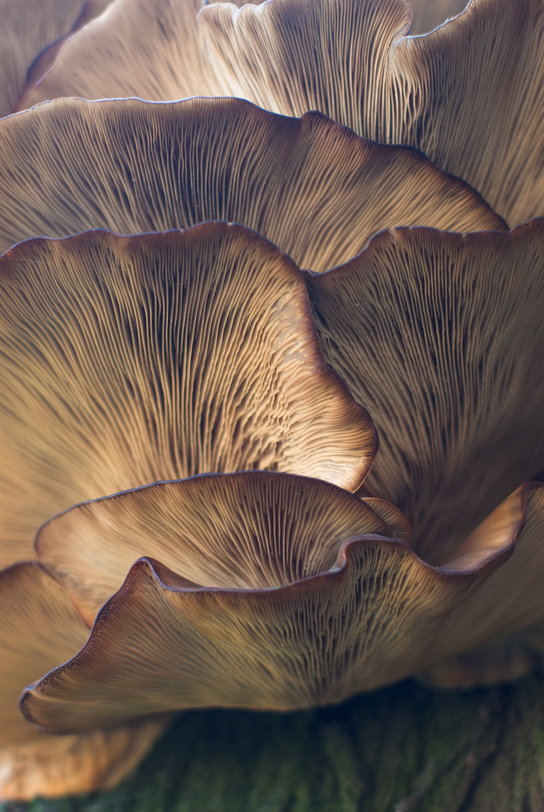

중국의 4대 진미로 꼽히는 노루궁뎅이버섯은 노루의 엉덩이 털과 닮았다고 해서 붙여진 이름으로 여름에서 가을까지 졸참나무, 떡갈나무 등 활엽수의 줄기에 한개씩 자라는 식용버섯으로 톱밥을 이용한 인공재배도 이루어지고 있습니다.

노루궁뎅이버섯의 효능 쓴맛이 강해 식용보다는 약용으로 사용되어 왔는데 항암효과, 소화기효과, 치매예방과 당뇨병, 두뇌발달과 노화방지, 만성 장염 개선, 면역력 향상, 다이어트에 효과적이며 단백질 함량이 버섯류 중 24%로 가장 많으며 비타민B군, 비타민D군이 풍부합니다.